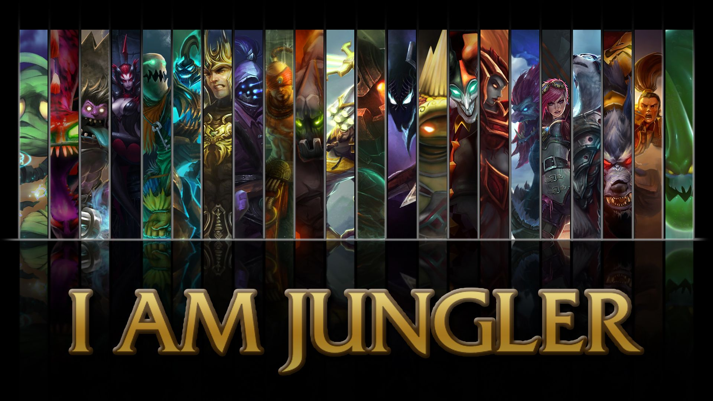

Video tutorial:
JUNGLA ¿QUE DEBO SABER?
El JUNGLA es ese ser que aparece en tu línea para robarte farm (es el número que llevas de súbditos asesinados, ese número se ve en la parte derecha, al lado de los asesinatos, veces que has muerto y ayudas realizadas), ayudarte a matar o robarte la muerte (algo que suele molestar bastante a los campeones propietarios de dicha línea, sobre todo si necesitaban esa muerte para ponerse por encima del contrario). Obviamente cumplirá la función de ayudarte si está en tu equipo, si aparece el jungla contrario intentará matarte. Su línea, por llamarlo de alguna forma, ocupa la mitad del mapa. Es el espacio que hay entre las calles. Todo lo que no sea TOP, MID, BOT o los nexos es Jungla. Se encarga de hacer dragón (los cinco que van rotando en el emplazamiento que tienen en La Grieta: que son aire, montaña, fuego, agua y anciano). Las ayudas que tiene el jungla para matar a X monstruos se dan por qué calle está más cerca.
Video tutorial:
Copyright League of Coaching© 2023 Todos los derechos reservados.
marcas comerciales o marcas registradas propiedad de League of Coaching.